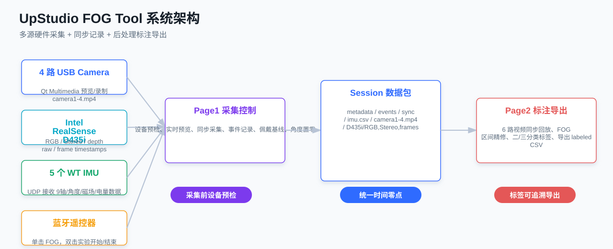
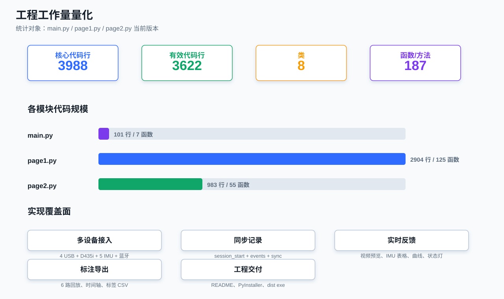
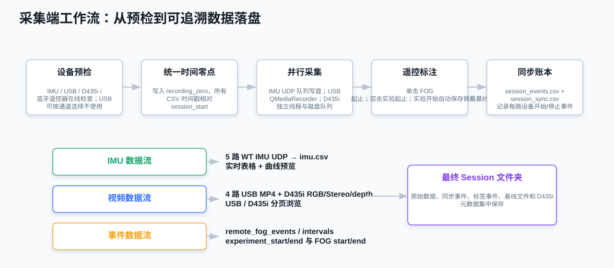
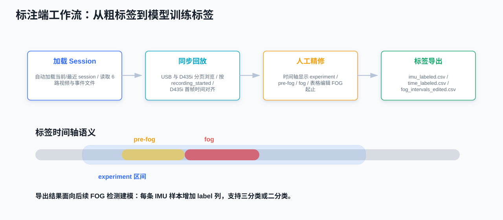
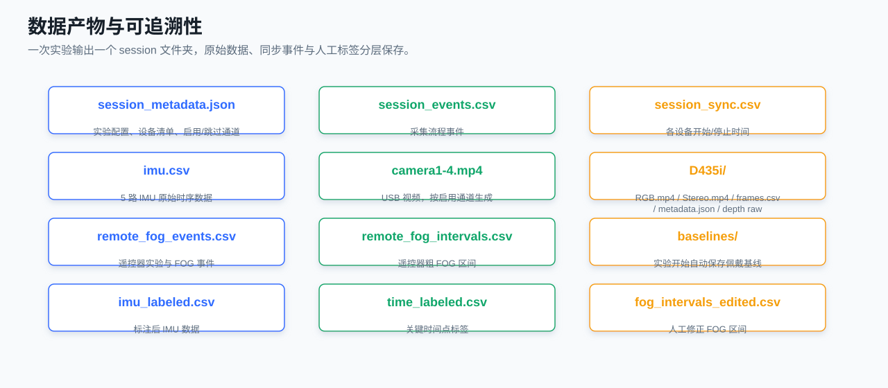
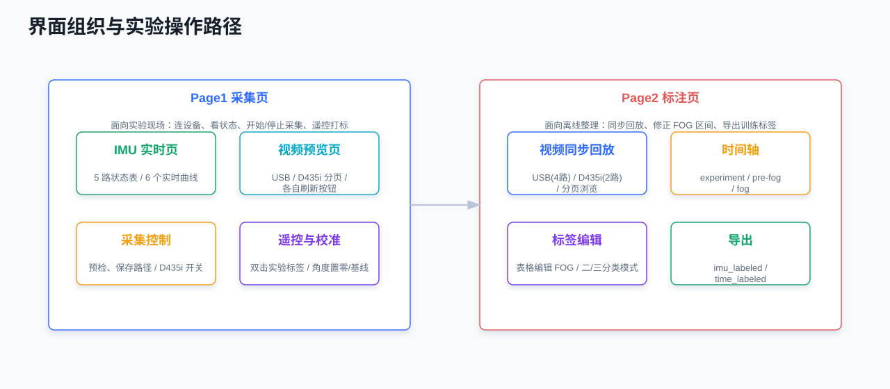

面向下肢外骨骼/FOG 实验的多源同步采集与标注上位机。
USB Camera
RGB / Stereo / depth
WT IMU
视频同步标注路数
生成时间：2026-07-02 17:20
采集端、数据账本和标注端已经形成闭环。

核心 Python 代码 3988 行，有效代码 3622 行，8 个类，187 个函数/方法。

统一时间零点，多线程/队列写盘，遥控器标签进入同一 session。

6 路视频同步回放，FOG 标签精修后导出到 IMU 样本级标签。

每次实验形成完整 session 文件夹，方便追溯、复查和建模。

Page1 面向采集现场，Page2 面向离线标注；USB 与 D435i 视频已分页。
